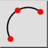
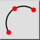
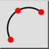
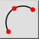

3 punkty
Pasek narzędziowy / ikona:
 

Menu: Rysowanie > Łuk > 3 punkty
Skrót: A, 3
Polecenia: arc3 | a3
Jest to tłumaczenie automatyczne.
Pasek narzędziowy / ikona:
 

Menu: Rysowanie > Łuk > 3 punkty
Skrót: A, 3
Polecenia: arc3 | a3
Jeśli znasz punkt początkowy, końcowy i pośredni na linii łuku, możesz użyć tego narzędzia do narysowania łuku.